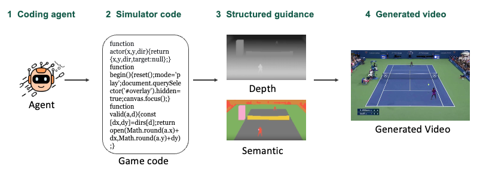
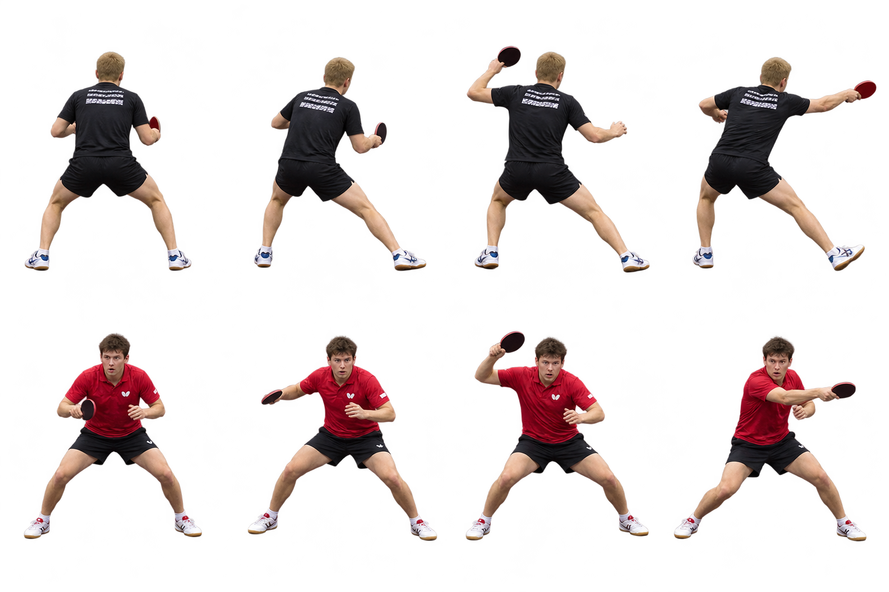

One duck video, two possible games
Same ducks and motion. Choose the goal: chase or cooperate.
CVPR 2027 / Week 7
Video part
Agent part

Since we can build a game's modules (objects, mechanics, ...) from text, can we decompose all of them out of a video?
State space
Which entities exist and what attributes they have (scene)
Transition rules
How the state changes (mechanics)
Behavior
How entities move in this world (motion / style / play style)
Appearance
What they look like (visuals)
I think a game is made of these. Can we extract all of them from a video? Then can it do:
WASD move · J shoot · R reset
WASD move · J shoot · E talk / advance · ↑↓ choose · Esc close · R reset
A / D move · Space jump · R reset
A / D move · Space jump · R reset
I did not find many examples of factor composition, and I feel it would need to go up to 3D. I think this is a good form of world in today's agent era, but it may be too big a jump at once.
Sometimes it feels awkward. Regardless of how realistic the result is, not every video needs to become a game, and not every video has game-like qualities.
A video of two ducks chasing each other could become a chase game or a cooperative game. A person should define the intent.
Same ducks and motion. Choose the goal: chase or cooperate.
Same court and swings. Choose the goal: rally or dodge.
Illustrative game concepts: the video provides the visual and motion cues; the intent defines the goal and rules. Click an image to enlarge.
Character appearance
Identity, shape, clothing and visual features of the person / object
Scene structure
Background, object layout, spatial relations and activity boundaries
Motion features
How it moves, turns and swings: pose, trajectory, speed and rhythm
Interaction cues
Who interacts with whom, and the observable result, e.g. after the racket hits the ball, the ball changes direction
VideoPlay Harness: From Watching to Playing. Reference video + user Intent → an agent writes a playable program. It keeps the video's character, scene and motion, but the gameplay follows the Intent: not a replay of the video. Scope: Video → Playable Program. No video renderer, no RL.


A player moves on a court and swings at the ball.
"Let me control this player to move and swing. Every successful return scores 1 point."
if arrow keys → move if Space → swing goal: +1 per return
Rough on purpose: enough to ask Action what the player must be able to do.
if player.swinging and swing.in_hit_window and dist(ball, racket) < reach: hit(ball) if return_ok(ball) and not ball.scored: score += 1 ball.scored = True if ball.out or ball.bounced_twice: serve_again()
| action | spec | source |
|---|---|---|
| idle | loop · 1 pose | video |
| move ← → | 4 px/tick · 2 poses | video |
| move ↑ ↓ | same speed | added |
| swing | 6 · 4 · 8 ticks · locks move | video |
 reference
referenceOne consistent look, a few key poses per action. No full multi-view animation in v1.

net: y=150, collider
baseline: y=356
play_area: estimated
Modules define content and behavior. Game Code is the implementation layer: evaluated and fixed on its own.
on key(Space): if state != swing: start(swing) update(): move(player, keys * 4) if hit_window: try_hit(ball) render(): draw(scene.bg) draw(pose[state][frame])
←→↑↓ move · Space swing · click to play
A check points to a place to look. It does not prove the root cause.
intent satisfied · rule asserts · hit condition · scoring & restart
e.g. one successful return scored twice
fix → conditions and rule functions
required actions covered · direction / speed · swing timing · matches reference
e.g. swing too short in the spec; move speed unrealistic
fix → action definitions, params, transitions
same identity and look · pose coverage · consistent across poses
e.g. swing frame does not look like the player; hit pose missing
fix → action images / poses
background and layout kept · court bounds · collision aligned with image
e.g. boundary config off the visible white line
fix → layout, bounds, collision config
builds and runs · spec ↔ implementation · input / event / asset binding · stable
e.g. assets are right, but Space plays the wrong animation
fix → implementation and integration code
anim=movegame/input.ts, game/anim.tsMechanics first, video motion fills in the details, actions drive the character assets, a Coding Agent implements, and per-target evaluation sends each fix to the part that broke.
Control the near player: move sideways and swing. Return at least 3 of 5 balls onto the far side of the table.
Open game full size ← / → move · Space swing · R restart. On-screen buttons are also available.

Generated appearance approximations, not extracted video frames. The five-ball challenge, timing and simplified physics are designed gameplay rules.
I prefer any video 2 game.